📊
従来型AI
過去のデータから答えを予測・分類するAI。
- 売上を予測する
- 犬と猫を見分ける
- 音声を文字へ変える
- 迷惑メールを分ける
パソコンが苦手でも問題なし。今日は、AIを説明できて、Geminiへ1回お願いし、画像を1枚作れれば合格。

AI（Artificial Intelligence：人工知能）は、人が考える・見分ける・予測する・作る作業を、コンピューターに手伝わせる技術。
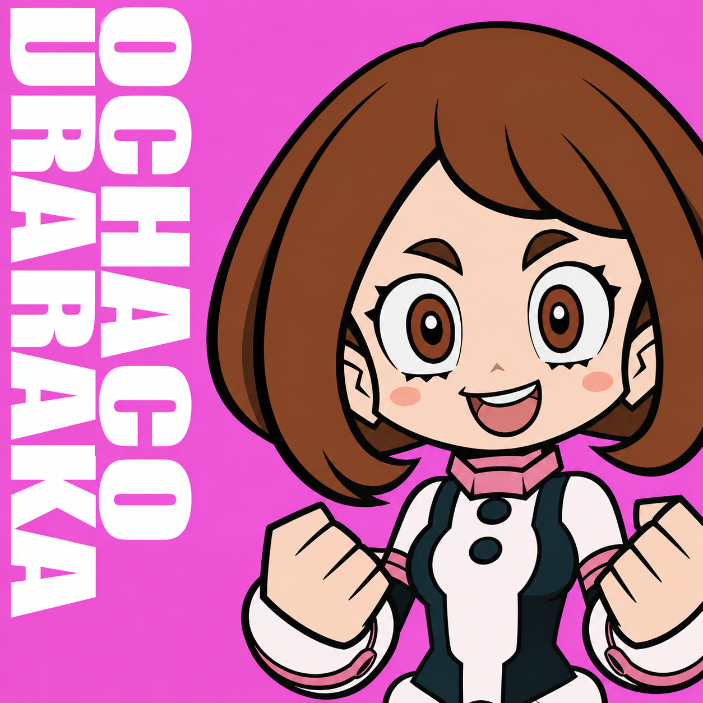
AIって、ロボットが勝手に考えて何でもやるやつなん？
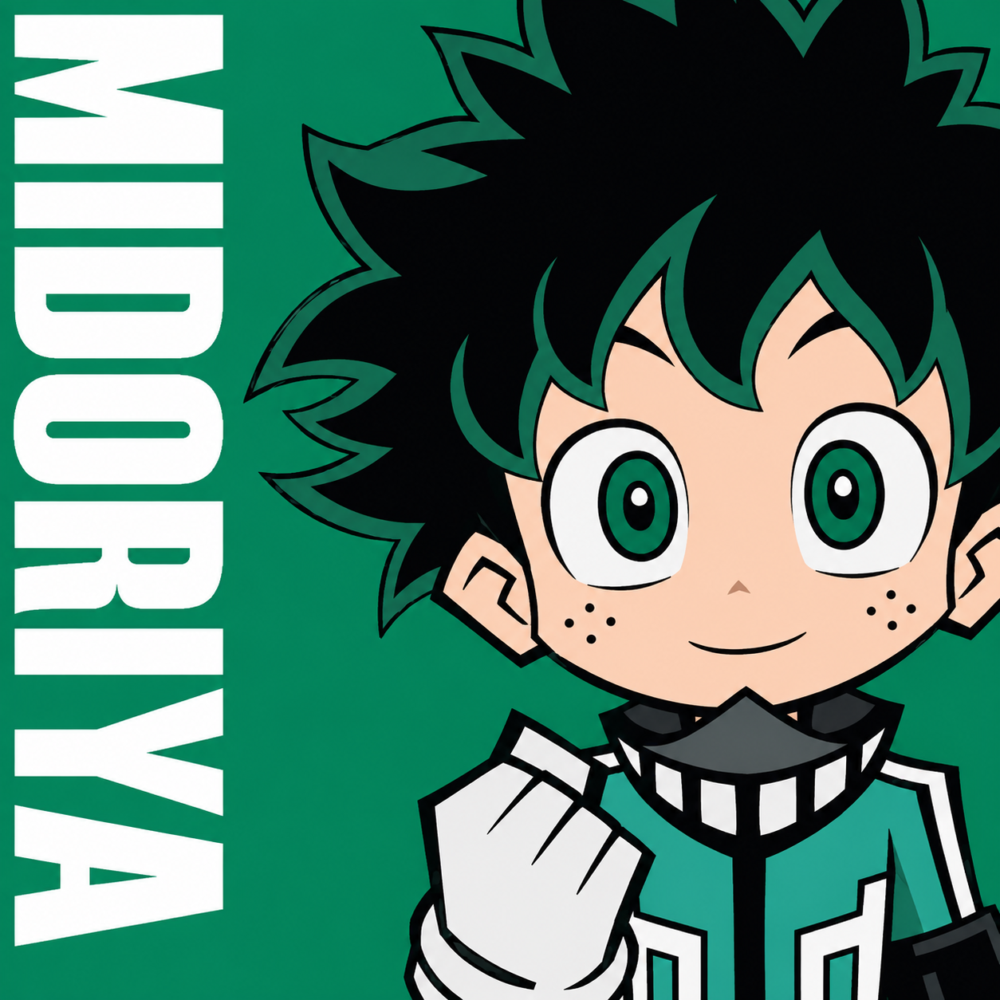
もっと普通に考えていいよ。AIは人の頭を使う作業を手伝う道具なんだ。
電卓が計算を助けるなら、AIは文章作り・整理・予測・画像作りを助ける。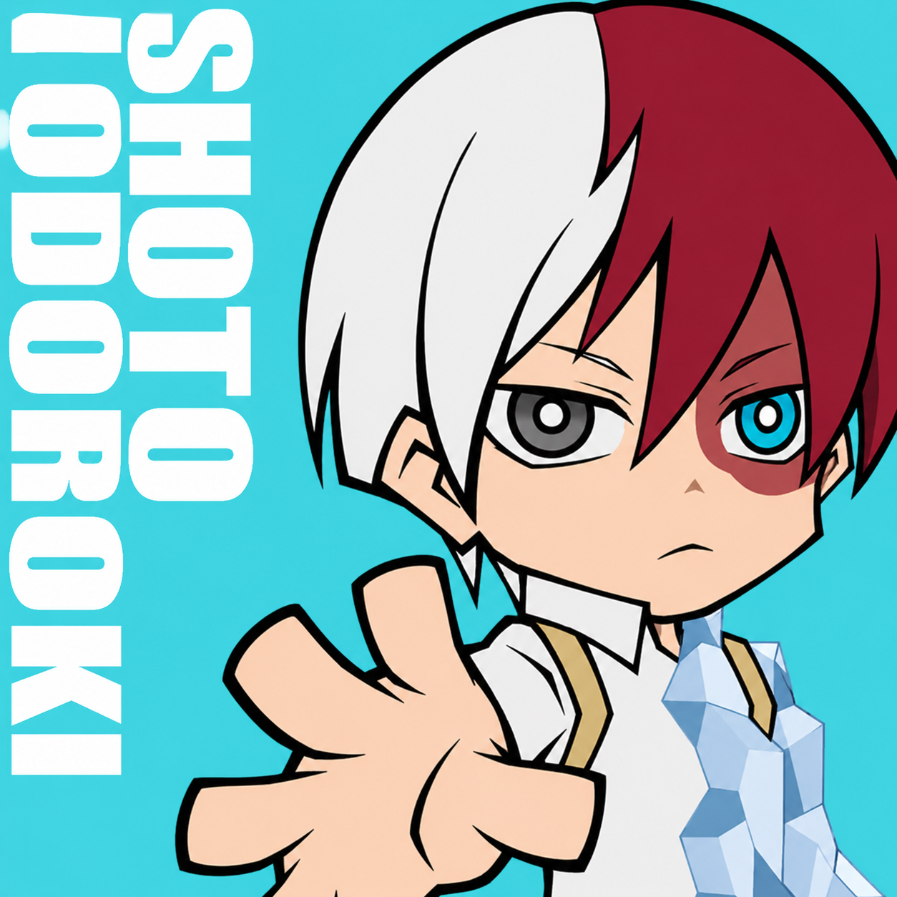
スマホの顔認証、迷惑メール判定、通販のおすすめ表示。すでに日常で使っている。
過去のデータから答えを予測・分類するAI。
学習したパターンを使い、新しい内容を作るAI。
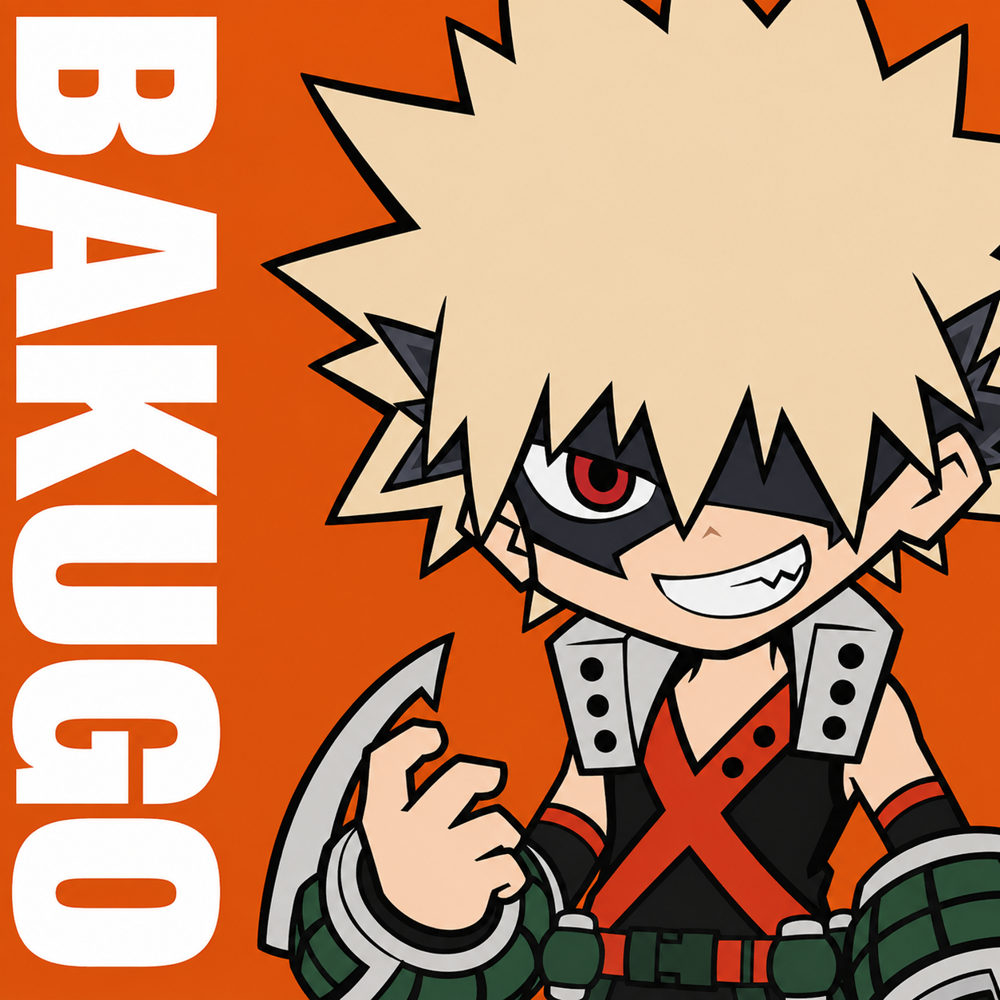
予測するAIと、作るAIだ。最初はそれだけ覚えりゃ十分だ！
顔認証、画像診断、音声認識。
売上、渋滞、到着時間を予測。
メール、ニュース、写真を仕分け。
文章、画像、音楽、プログラム。

AIは大量のデータから「こういう時は、こうなりやすい」というパターンを見つける。
データを見て、コンピューターがパターンを覚える技術。
大量の例題からコツを覚える。脳の神経回路をまねた仕組みを重ね、複雑な特徴を学ぶ。
何段階も考える、大きな学習装置。文章の中で、どの言葉がどの言葉と関係するかを捉える仕組み。現在の生成AIの土台の1つ。
文章のつながりを見るのが得意。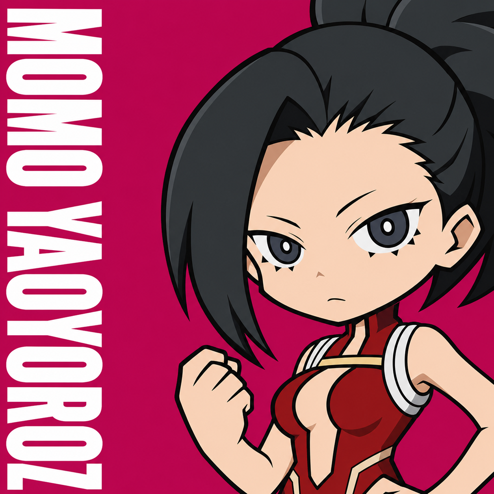
専門用語を暗記する必要はありませんわ。初心者は「AIは大量の例からパターンを学ぶ」と理解すれば十分です。
気温・湿度・過去の売上をたくさん見て、「暑くて湿度が高い日はアイスが売れやすい」と見つける感じだね。
人が決めたルール通りに動く。電卓なら「1＋1は2」という決められた計算を正確に行う。
大量の例からパターンを学び、予測や生成を行う。開発者が追加学習や調整をすると性能が改善する。
ロボットは「体」。モーターや腕で動く機械。
AIは「頭脳」。カメラで見て判断したり、言葉を理解したりできる。
GeminiはGoogleのAIアシスタント。全機能を覚えなくていい。「開く・頼む・答えを見る・追加で直す」の4つから始める。
質問を綺麗な文章にしてから送らなあかんの？ そこでもう疲れそう……。
雑なメモで大丈夫。「町内会のお知らせを作って」だけでも始められるよ。答えを見てから条件を足せばいい。
最初から百点の指示を作ろうとすんな！ 送れ！ 返ってきた答えに文句を足せ！

Googleアカウントでログインし、ブラウザーから開く。
Geminiアプリでログイン。音声入力やカメラも使える。
過去の相談を見返す場所。機密情報を入れた会話の共有には注意。
メールを書く、要約する、画像を作る。
取引先、子ども、高齢者、SNS利用者。
300文字以内、柔らかく、箇条書き。
「必要な情報があれば先に質問して」と頼む。
下書きを作ってもらい、名前・日付・敬語を自分で確認する。
「3行で」「重要な点だけ」と頼む。個人情報・会社の秘密は入れない。
やることを全部書き、優先順位と今日やる3つを決めてもらう。
画像生成では、長い専門用語より「誰が・どこで・何をしている・どんな雰囲気・縦横」を伝える。
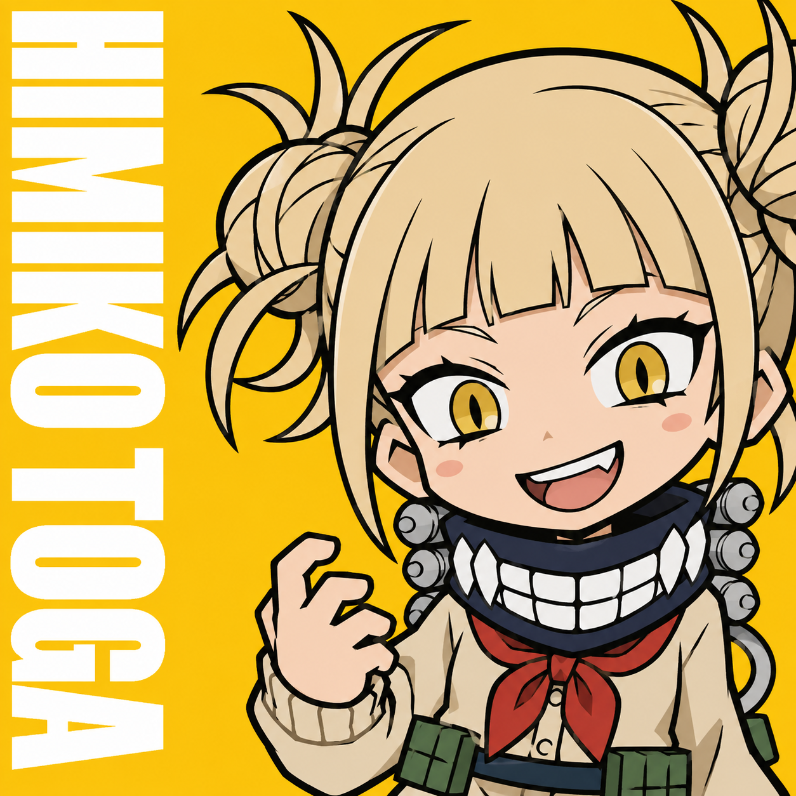
「かわいい画像」だけじゃ、AIも迷っちゃうよ。誰を、どこで、どんな姿にしたいのか教えてあげて。
主役・場所・行動・雰囲気・構図を順番に書けば、初心者でも指示を整理できますわ。
入力欄で画像作成を選び、作りたい内容を文章で送る。表示名は画面更新で変わる場合がある。
「服を赤に」「背景を明るく」「人物を中央に」と追加で頼む。
元画像を添付し、残す部分と変える部分を具体的に伝える。
数字、日付、人名、法律、医療、契約、料金、最新情報。
住所、電話番号、顧客情報、会社の秘密、未公開資料。
AIが作る → 人が読む → 直す → 責任を持って使う。
文章、画像、運転支援、診断支援など、特定の仕事に強いAIが中心。
AGI（汎用人工知能：人間のように幅広い仕事をこなすAI）や、ASI（人工超知能：人間を超える知能）は将来像として議論されている。登場時期や実現は確定していない。
AIは翻訳、医療支援、新薬開発、自動運転などで社会を変える。一方で仕事のやり方も変わり、AIを使って確認・判断・提案できる人の役割が大きくなる。
AIは「正しい命令を一発で出す試験」じゃない。会話しながら欲しい形へ近づける道具なんだ。
読むだけで終わるな！ 1回送って、1回直させろ。それで今日の合格だ！
Canva（キャンバ）は、テンプレート（最初から整っている見本）を土台に、画像・資料・動画・SNS投稿などを作れるデザインツール。絵が描けなくても、センスに自信がなくても始められる。
デザインって、絵が上手い人しかできんと思ってた……。Canvaなら、ほんまに私でもいける？
大丈夫。Canvaは白紙から全部描く道具じゃなくて、見本を土台に組み立てる道具なんだ。だから最初の1枚が作りやすい。
料理で言えば、材料を一から育てるんじゃなく、下ごしらえ済みのセットから始める感じ。PC・スマホ・タブレットのどれでも使えますわ。無料版でもかなり多くの機能を試せるので、まずは使ってみるのが最優先です。
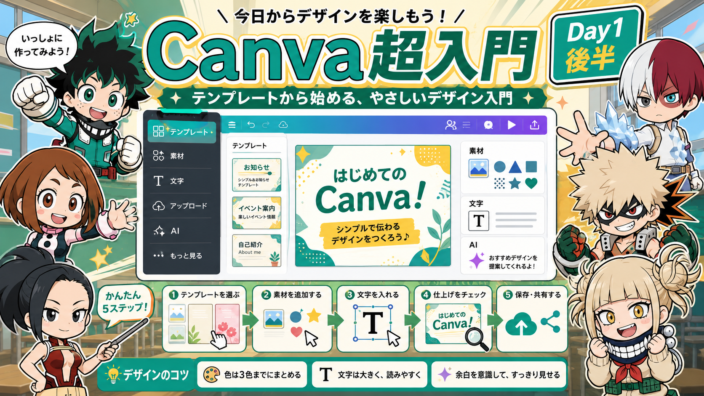
初心者が最初に覚えるのは「検索する」「サイズを選ぶ」「テンプレートを選ぶ」の3つ。ここだけ分かれば1枚作れる。
ホーム画面では、まず検索バーを見る。作りたいものを日本語で入れればいい。例えば「Instagram投稿」「チラシ」「プレゼン」だ。
作りたいものを探して、サイズを選んで、見本を選ぶ。最初はそれだけでええんやな！
Instagram投稿なら4:5（1080×1350）や正方形がよく使われます。用途に合うサイズを選ぶと、後で作り直しにくくなりますわ。
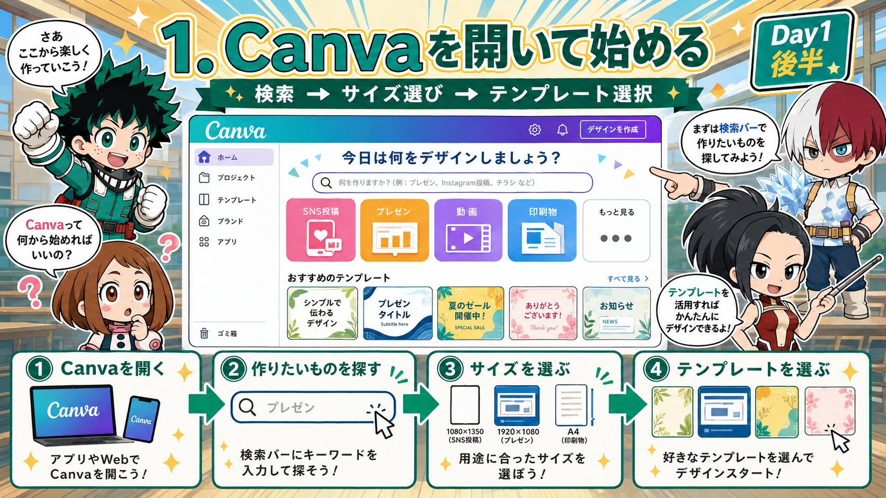
過去のデザインやおすすめが並ぶ最初の画面。
「何を作るか」を探す場所。普段の言葉でOK。
SNS、動画、印刷物など用途に合う大きさを選ぶ。
見本デザイン。気に入ったものを選んで編集へ進む。
テンプレートを使うのはズルではない。むしろ、見やすさや配置を学ぶ最短ルート。文字・写真・色を自分向けに差し替えれば十分オリジナルになる。
「美容」「スイーツ」「セール」「名刺」など、作りたい内容で検索する。
王冠マーク付きはPro（有料版）用。無料で使えるテンプレートだけでも十分始められる。
色より先に、文字の見やすさ・写真の置き方・余白の使い方を見る。
編集で最初に覚えるのは5つだけ。「素材を入れる」「文字を入れる」「写真を入れる」「複製する」「配置を整える」。これで大半の基本作業が回る。
写真を変えるだけでも、雰囲気って一気に変わるよね〜。かわいくも、大人っぽくもできる！
入れりゃいいってもんじゃねぇ！ 文字も色も写真も盛りすぎると、何を見せたいか分かんなくなるぞ。
最初のコツ：色は2〜3色、フォントは1〜2種類、主役の写真は1つに絞る。左メニューの「素材」「テキスト」「アップロード」を順番に見るだけでも十分だね。細かい設定は後から覚えればいい。
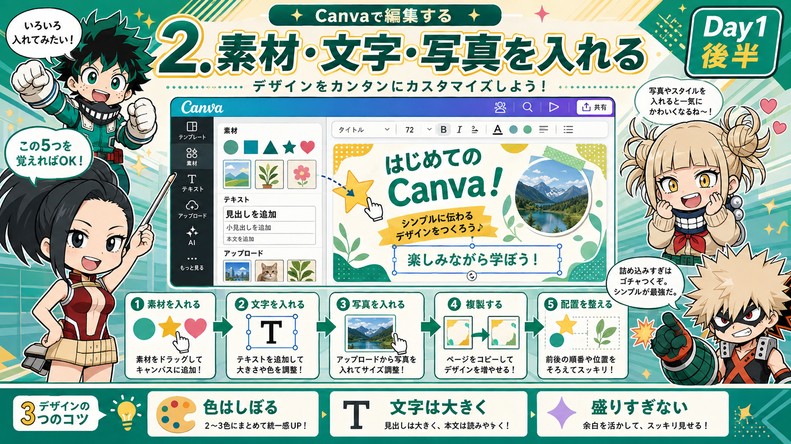
四角形、円、矢印、吹き出しなど。背景や目印に使う。
見出し・本文を入れる。大きさ、色、太さ、配置を調整。
自分の画像をアップロードしたり、Canva素材を使ったりできる。
良いパーツは複製して使い回す。位置をそろえると見やすくなる。
AI機能は便利だが、考える役目まで丸投げしない。文章の下書き、画像生成、背景削除、デザイン提案などを補助として使うと強い。
文章を考えるのが苦手ならMagic Write（文章作成AI）を使えばいい。写真の背景を消したいなら背景リムーバーが速い。
AIが提案した文章やデザインは、そのまま採用する前に目的と事実確認を行うべきですわ。特に社名、日付、金額は必ず見直しましょう。
AIはサポート役だ！ 最後の確認をサボるな！ そこを投げたら事故る！
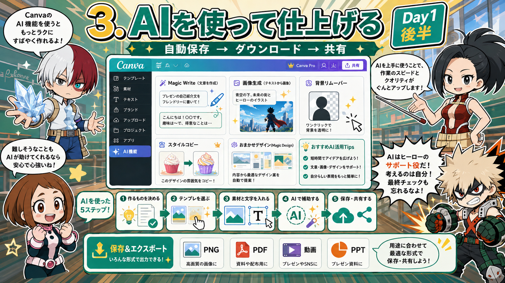
有料版のCanva Proでは、追加の素材やAI機能、ブランドキット（色やロゴの管理）が使いやすくなる。
考えが全くない時に丸投げするより、方向性が少し決まっている時に補助で使う方が結果が安定する。
Canvaは自動保存される。ただし、最後にどの形式で書き出すかは目的で変わる。用途に合う形式を選べば、配布も発表もスムーズになる。
画像として使う。SNS投稿やWeb掲載向け。
印刷や配布向け。チラシ、資料、マニュアルに向く。
動きのあるSNS投稿や短い紹介動画向け。
PowerPoint（プレゼン資料）形式。社内資料や発表に便利。
Canvaって、難しい設定を全部覚えてから触るんじゃなくて、1枚作りながら慣れる道具なんやね！
その通り。Day1後半の合格ラインは、テンプレートを選び、文字と写真を少し変え、PNGで保存できることだよ。
Day2前半では、Canvaの2026年アップデートを「何が増えたか」ではなく「自分にどこが役立つか」で見る。初心者は、まず1つ選んで使ってみるだけで十分。
Canvaは、デザインだけの道具から、印刷・AI編集・教材作成・動画までできる総合ツールに近づいてきたんだ。
えっ、機能が増えすぎると逆に迷うかも……。何から見たらええの？
用途で分ければいい。印刷したい人、編集を楽にしたい人、作業を速くしたい人、教材や動画を作りたい人だ。
全部覚えず、「自分に関係ある機能」だけ拾えば十分。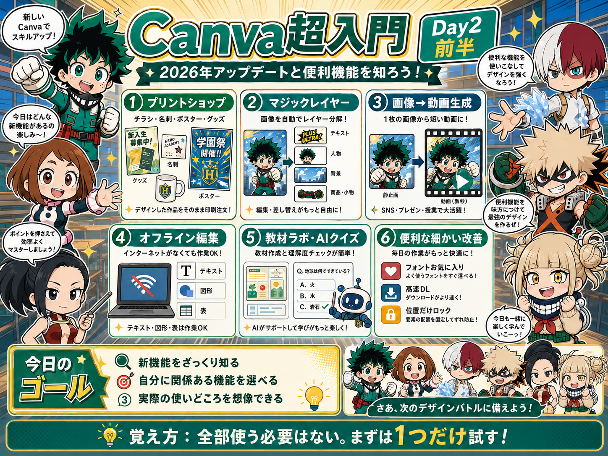
Canvaは「作る」だけで終わらない。プリントショップでそのまま印刷注文でき、マジックレイヤーで画像の中身をAIが分けてくれるので、後からの修正もやりやすい。
チラシ、名刺、ポスター、ポストカード、グッズなどをCanvaから直接注文できるのは便利ですわ。印刷先を探す手間が減ります。
作った後に「ここだけ直したい！」ってなるだろ。そこでマジックレイヤーだ。画像の文字・人物・背景を分けて直せると、やり直しが減る。
つまり、作った作品を紙やグッズにしやすくなったのと、後から修正しやすくなったってことやね！
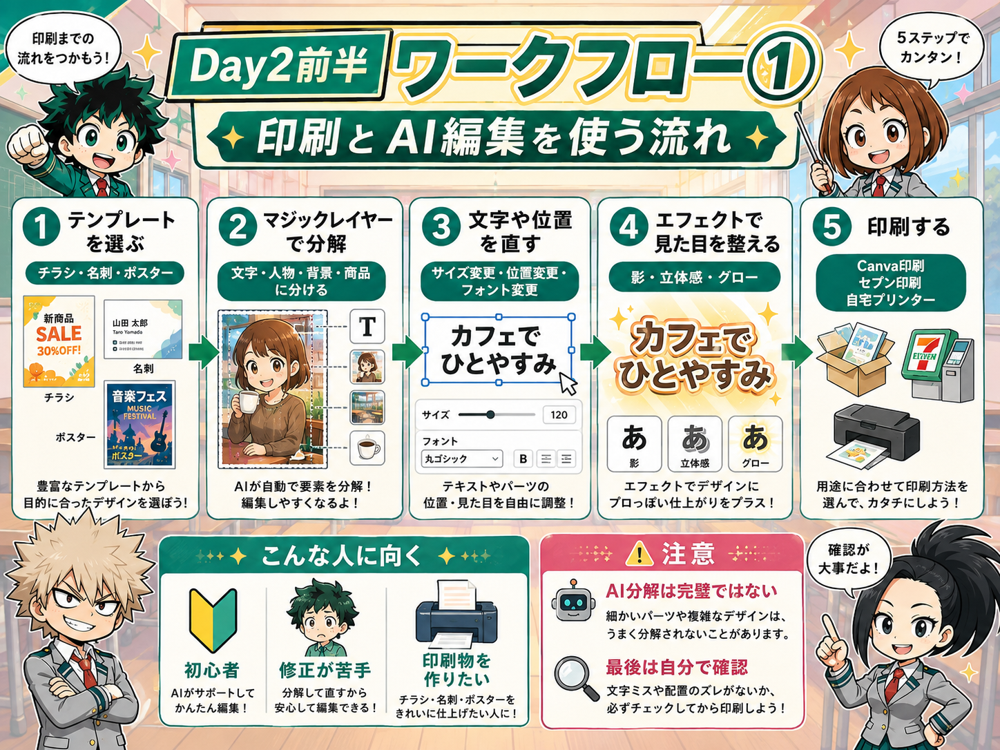
チラシ・名刺・ポスター・グッズを注文しやすい。
コンビニ印刷にもつなげやすい。急ぎの配布物に便利。
画像をレイヤー（編集しやすい部品）に分ける。
影・立体感・グローなどで見た目を整えやすい。
派手ではないが、毎日使うと効くのがこのブロック。フォントお気に入り、オフライン編集、フォルダー一括アップロード、高速ダウンロード、位置だけロックは、全部「面倒を減らす」ための機能だ。
お気に入りフォントがすぐ呼べるだけでも、毎回探さなくて済むね。位置だけロックも、レイアウトが崩れにくくて助かる。
オフライン編集はネットが弱い場所でも役立つ。フォルダー一括アップロードは、画像やPDFをまとめて扱う時に強い。
探す時間、待つ時間、ズレる時間を減らす。要するに、ムダを削る機能セットだ！
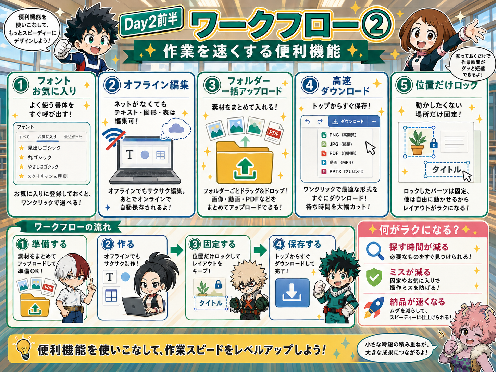
よく使うフォントを迷わず呼び出せる。
素材をフォルダーごと入れられるので整理がラク。
背景や見出しの場所だけ固定して、事故を防ぐ。
テキスト・図形・表などはネットなしでも編集しやすい。
トップ側から直接保存しやすくなり、書き出しが速い。
急ぎの資料・投稿・配布物で特に効果を感じやすい。
Canvaは、教材ラボ、AIクイズ、ページデコレーション、コンポーネント、高画質化、画像→動画生成、Canvaローリーなど、教育や発表にも役立つ機能が増えた。
教材ラボやAIクイズって、先生向けっぽいけど、社内研修とか説明資料にも使えそうやね。
はい。ページデコレーションは下書きの見た目づくり、コンポーネントは定番パーツの再利用、高画質化は古い画像の再利用に向いていますわ。
画像から短い動画が作れたり、アニメーションツールで動きを付けられたりするのも面白いよね。静止画だけじゃ伝わりにくい内容を、動きで補える。
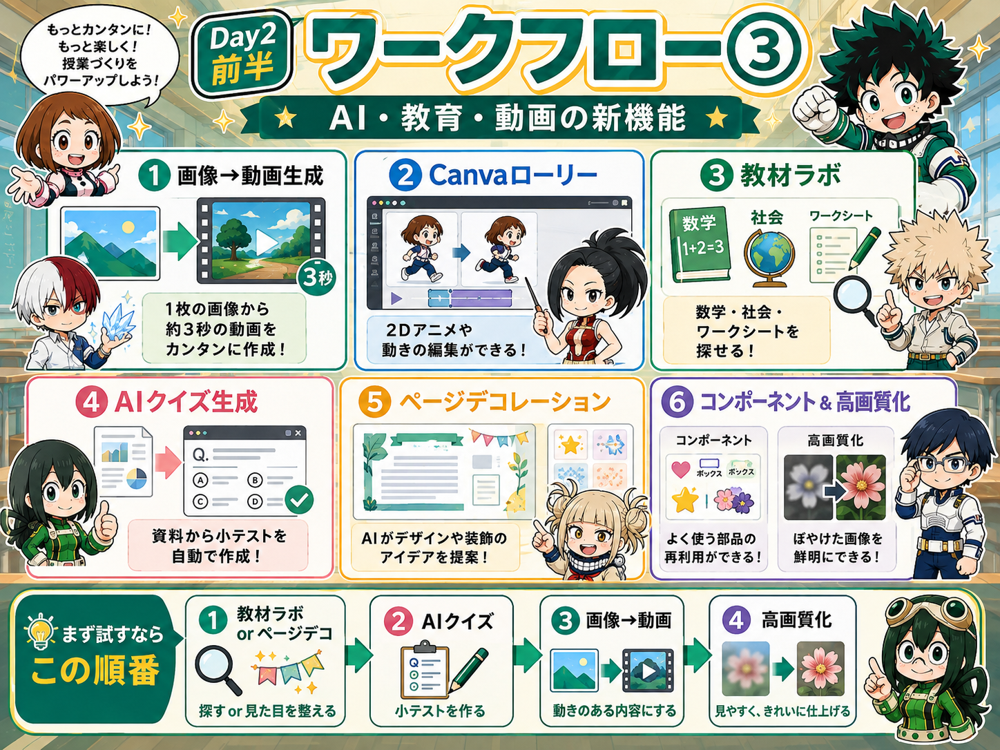
用途別の教材テンプレートを探しやすい。
資料や文章から小テストを作りやすい。
雰囲気に合う見た目の案を出してくれる。
定番のパーツを再利用して統一感を出せる。
ぼやけた画像を見やすくしやすい。
1枚の画像から短い動画を作る入口になる。
2Dアニメや動きのある説明づくり向け。
社内研修、説明会、SNS紹介、簡単な営業資料にも応用可能。
Day2前半の合格ラインは、新機能を全部説明できることじゃない。自分が次に試す機能を1つ決められることだ。
そう。Canvaは機能が増えても、使う順番は「必要なものから」でいい。1つずつ味方にしていこう！
Day2後半では、CanvaのAI機能を実際の仕事へつなげる。初心者が覚える流れは、作る → 比べる → 直す → 確認するの4段階だけでいい。
AIは完成品を一発で当てる道具というより、案を早く出して、会話しながら良い形へ近づける道具なんだ。
会社名や日付を変えたり、写真を差し替えたりする細かい作業にも使えるん？
そこが実務で強い部分だ。新規作成だけでなく、修正・翻訳・別案作成・資料整理・発表まで一つの流れで考えられる。
全部の機能を覚える必要はない。自分が面倒だと感じる作業から1つ選べばいい。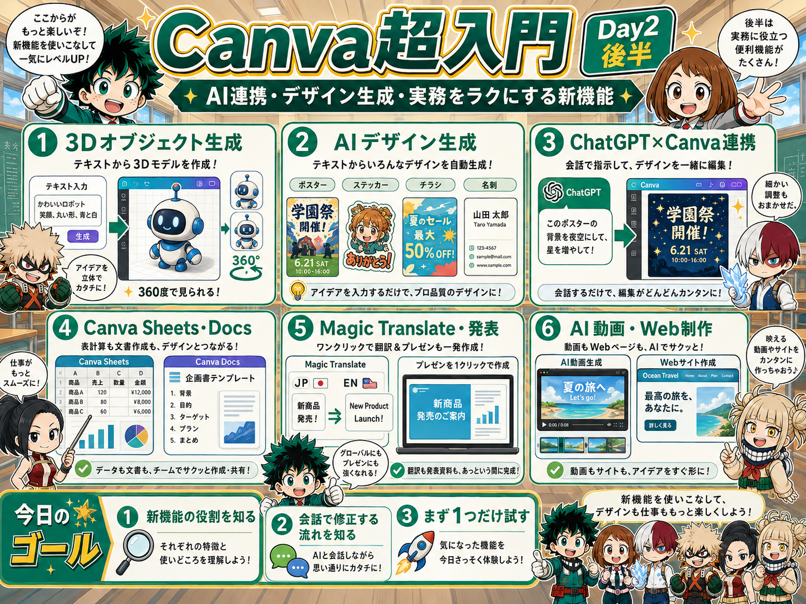
資料内では、ChatGPTからCanvaへデザイン作成や修正を指示する流れが紹介されている。ChatGPTが単独で画像を直接加工するのではなく、会話を入口にCanva側の編集機能を使う考え方だ。
営業資料の日付変更、採用チラシの写真差し替え、SNS画像の色違い作成など、小さな修正が積み重なると大きな時間になりますわ。
「いい感じに直せ」じゃ伝わらねぇ！ 誰向け・何を変える・何を残すを言え！
元デザインを用意して、変更を文章で伝え、マジックレイヤーで要素を分け、Canvaで文字・色・写真を調整して、最後に保存するんだね。
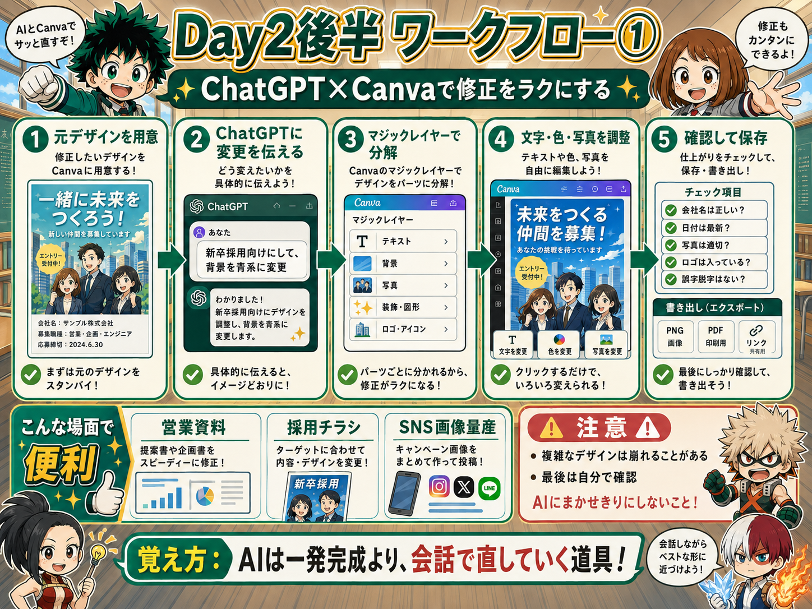
会社名、実績、サービス内容、日付などを差し替える。
募集職種、対象者、写真、説明会情報を変更する。
同じキャンペーンから色違い・サイズ違い・文章違いを作る。
Canva AIは、完成品を1枚だけ作らせるより、同じテーマから複数案を出し、比較して選ぶ使い方が分かりやすい。3D素材・ステッカー・デザイン案・Webサイトなど、入口が増えている。
かわいい案、強い案、大人っぽい案。最初から1つに決めず、雰囲気を変えて比べた方が楽しいよ。
Magic Mediaでは3Dオブジェクトや素材を作る入口があり、AIデザインではポスター・名刺・ステッカーなどの案を作れる。スタイルマッチは雰囲気をそろえる用途だ。
案を増やすだけで終わるな！ 一番マシな案を選んで、文字と配置を自分で詰めろ！
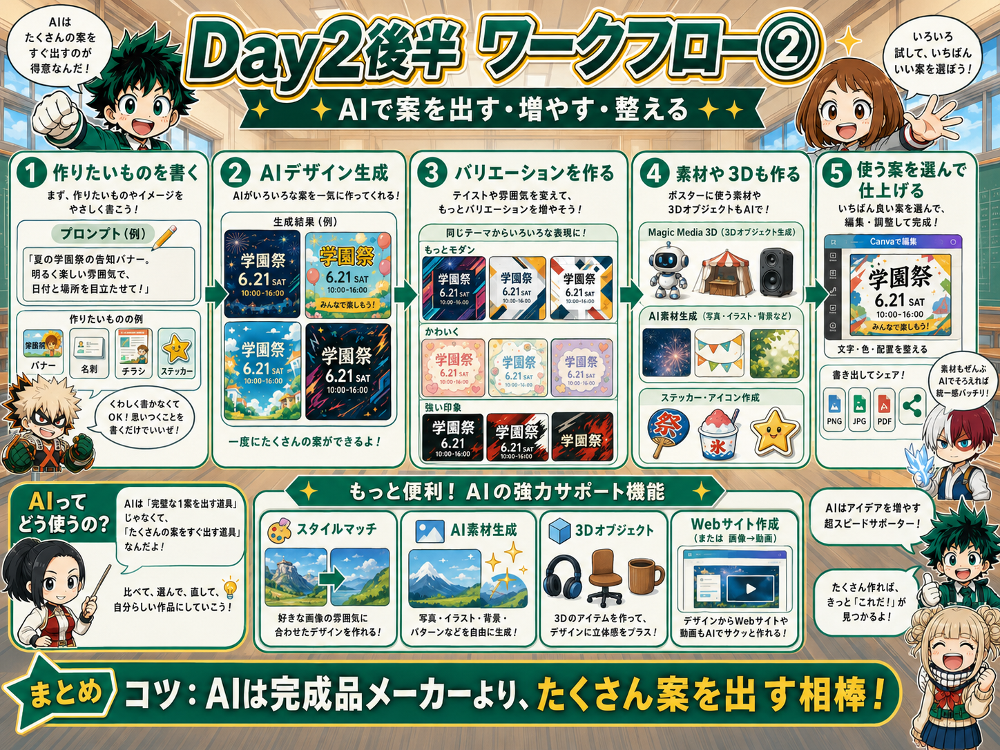
Magic Mediaで立体的な素材を作り、方向を変えて使う。
壁紙、ステッカー、チラシ、名刺などの案を出す。
「もっとモダン」「強い印象」などで別案を作る。
写真・イラスト・背景・アイコンなどをキーワードから作る。
素材の雰囲気をそろえ、同じシリーズらしく見せる。
文章や画像をもとに商品紹介ページなどの土台を作る。
SNS、バナー、チラシ、資料など用途に合わせて作る。
比べる → 選ぶ → 直す。AI案をそのまま完成品にしない。
Canvaは画像だけでなく、表計算・文書・翻訳・プレゼンにも広がっている。初心者は「情報を整理する → 文書にする → 翻訳する → 見せる」と覚えると迷いにくい。
Canva Sheetsでは表形式で情報を整理し、行のグループ化・折りたたみ・列の非表示などを使えますわ。
Docsで文章にして、Magic Translateで翻訳して、そのままプレゼンにできるなら、ソフトを何個も行き来せんでええんやね！
社内資料、セミナー、商品説明、海外向け案内みたいに、同じ情報を違う見せ方へ変える時に便利だね。
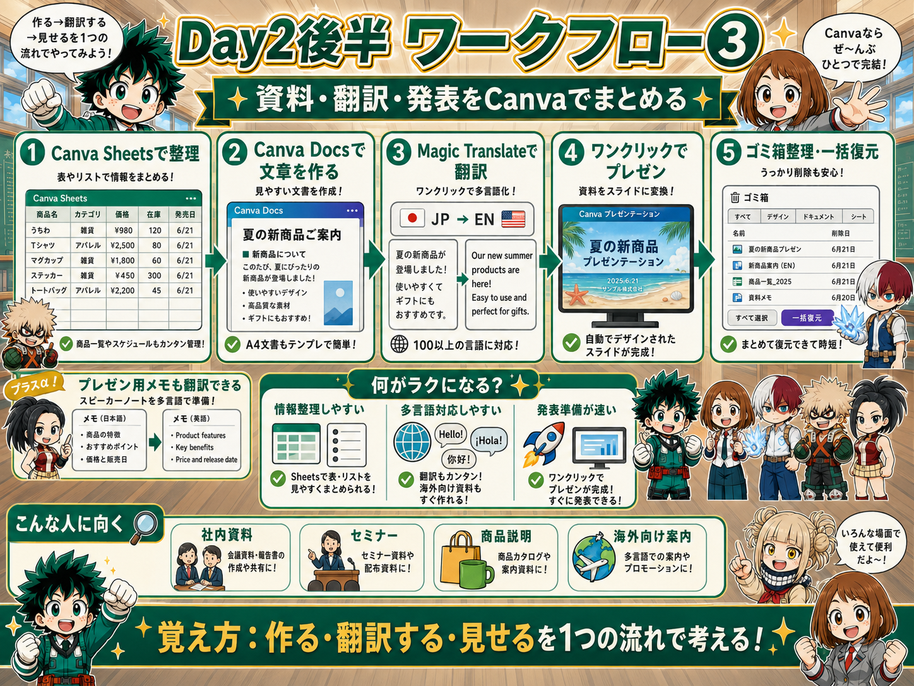
Excelのように表やリストを整理し、大量データを扱う。
A4などのページ形式で、印刷資料やビジネス文書を作る。
デザイン本文だけでなく、発表用メモも多言語へ変換する。
編集画面からすぐ発表表示へ移りやすい。
複数素材をまとめて復元・削除し、整理時間を減らす。
会議資料、研修、商品カタログ、海外向け案内、セミナー。
資料内では、文章から動画を作るAI機能、日本語音声付き動画、Canva AIによるWebサイト制作などが紹介されている。動画・Webは、画像より確認項目が増えるので、小さく試すのが安全。
文章から動画のたたき台を作る。資料内では16:9の例が紹介されている。
多言語対応や日本語音声を使った説明動画への応用が想定される。
ブランドサイトや商品紹介ページの土台を作り、URLで公開する。
AIに全部やってもらうんやなくて、面倒な部分を助けてもらって、最後は自分で確かめるんやね。
その通り。Day2後半の合格ラインは、AIで1案出し、1回直し、自分で確認して保存できることだよ。